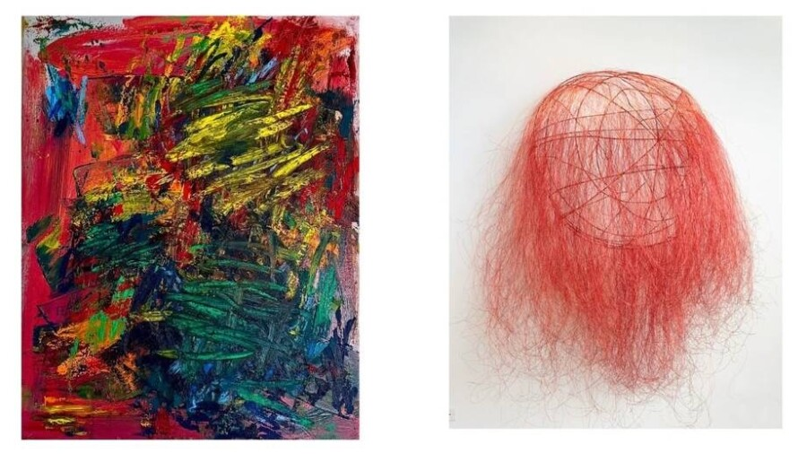

MOONLIGHT: Out of the Chaos
ENGAGE Projects is excited to bring a fresh take to the gallery experience with the upcoming exhibition Moonlight: Out of the Chaos in Chicago’s historic Bucktown district. The pop-up show, organized by Director of ENGAGE Projects Jennifer Armetta, curator Nora Schneider, interdisciplinary artist Kasia Kay, and sculptor Lucy Slivinski, is a rumination on feminine forces and cyclical change, imperfection and inner peace. Just as the moon reflects the sun’s light, it also represents a reflection on our own lives, choices, and the state of the world around us; Moonlight asks the questions, How do we find the calm amidst turbulent times? What is my guiding light in the darkness? The gallery will showcase a variety of sculpture and mixed media painting and will be host to a series of exhibition programming made to activate this space of community including cocktail hours, panel discussions, and community gatherings. Please join us on Thursday, April 9th from 5-9pm for the opening celebration!
Interested in introspection and identity, Kasia Kay is a Polish American painter and sculptor who splits her time between the United States and Poland. She earned her B.F.A. from Columbia College Chicago in 2004 and acquired expertise in metal casting at the Chicago Industrial Arts and Design Center in 2017. Kay has exhibited in solo and group exhibitions across Belgium, Germany, Greece, Italy, and the United States, and her works are included in collections in Europe and the U.S. A seasoned curator, Kay has curated numerous international group exhibitions and site-specific projects in major cities such as Athens (Greece), Chicago (U.S.A.), Miami (U.S.A.), and New York (U.S.A.), contributing to the global art community. Kasia Kay has been featured in Artnet News, :arte Venice, Newcity Art, Chicago Gallery News, Chicago Interiors, and The New York Times among other publications.
Lucy Slivinski is a sculptor and installation artist based in Chicago. With over 40 years of experience, she utilizes recycled materials and inventive processes in her life-long practice. Slivinski holds an MFA from Cranbrook Academy of Art and a BFA from Northern Illinois University. Her innovative approach to art has earned her numerous honors and opportunities including her installation “Bon Journée! In the Land of Love,” at Nick Cave’s exhibition space Facility in 2025, the solo exhibition “Passion Dance”at N’Namdi Center for the Arts in 2023 in Detroit, Michigan, and three years as the artist in residence at EXPO Chicago where she created large-scale light installations among other opportunities. Her work is part of many private and public collections including Capital Investments Collection, The Longhouse Collection in New York, the City of Chicago, City of Bolingbrook, Illinois, and the City of St. Cloud, Minnesota. Slivinski’s work has been featured in prominent publication such as Art in America, The New York Times, NewCity Magazine, The OG Magazine, Sculpture Magazine, Chicago Interiors, and Luxe Magazine.